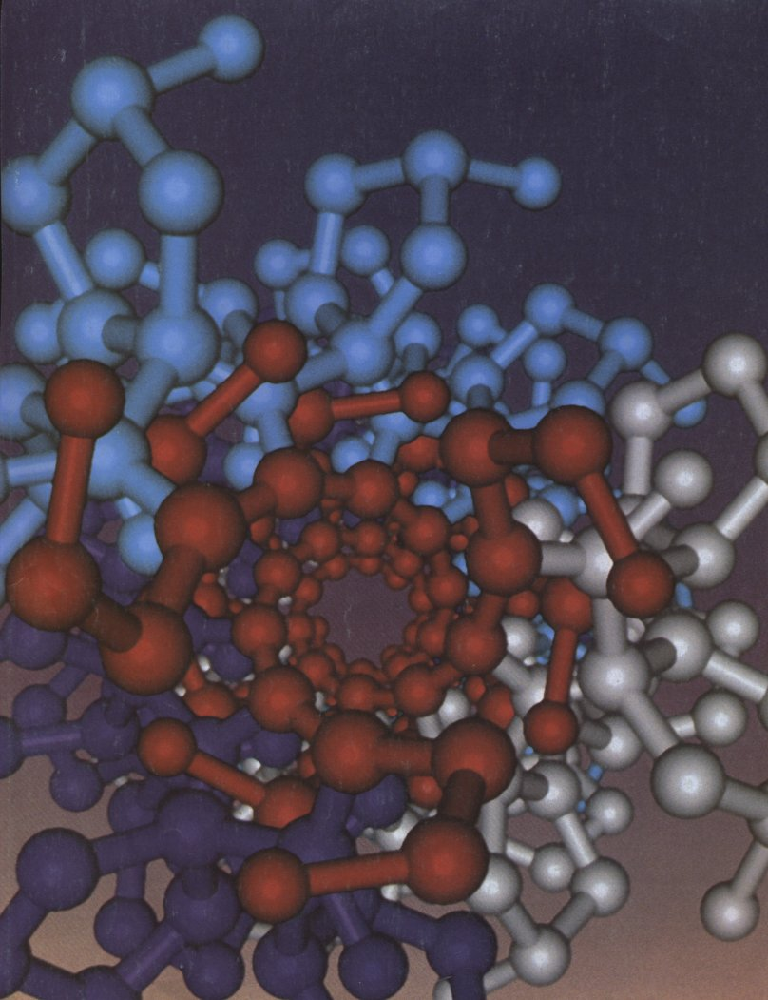

In Part I we contrasted the complex structure and function of living cells with the relative simplicity of the monomeric units from which the enzymes, supramolecular complexes, and organelles of the cells are constructed. Part II is devoted to the structure and function of the major classes of cellular constituents: amino acids and proteins (Chapters 5 through 8), fatty acids, lipids, and membranes (Chapters 9 and 10), sugars and polysaccharides (Chapter 11), and nucleotides and nucleic acids (Chapter 12). We begin in each case by considering the covalent structure of the simple subunits (amino acids, fatty acids, monosaccharides, and nucleotides). These subunits are a major part of the language of biochemistry; familiarity with them is a prerequisite for understanding more advanced topics covered in this book, as well as the rapidly growing and exciting literature of biochemistry.
After describing the covalent chemistry of the monomeric units, we consider the structure of the macromolecules and supramolecular complexes derived from them. An overriding theme is that the polymeric macromolecules in living systems, though large, are highly ordered chemical entities, with specific sequences of monomeric subunits giving rise to discrete structures and functions. This fundamental theme can be broken down into three interrelated principles: (1) the unique structure of each macromolecule determines its function; (2) noncovalent interactions play a critical role in the structure and function of macromolecules; and (3) the specific sequences of monomeric subunits in polymeric macromolecules contain the information upon which the ordered living state depends. Each of these principles deserves further comment.
The relationship between structure and function is especially evident in proteins, which exhibit an extraordinary diversity of functions. One particular polymeric sequence of amino acids produces a strong, fibrous structure found in hair and wool; another produces a protein that transports oxygen in the blood. Similarly, the special functions of lipids, polysaccharides, and nucleic acids can be understood as a direct manifestation of their chemical structure, with their characteristic monomeric subunits linked in precise functional groups or polymers. Lipids aggregate to form membranes; sugars linked together become energy stores and structural fibers; nucleotides in a polymer become the blueprint for an entire organism.
As we move from monomeric units to larger and larger polymers,
the chemical focus shifts from covalent bonds to noncovalent
interactions. The covalent nature of monomeric units, and of the
bonds that connect them in polymers, places strong constraints
upon the shapes assumed by large molecules. It is the numerous
noncovalent interactions, however, that dictate the stable native
conformation and provide the flexibility necessary for the
biological function of these large molecules. We will see that
noncovalent interactions are essential to the catalytic power of
enzymes, the arrangement and properties of lipids in a membrane,
and the critical interaction of complementary base pairs in
nucleic acids.
The principle that sequences of monomeric subunits are
information-rich emerges fully in the discussion of nucleic acids
in Chapter 12. However, proteins and some polysaccharides are
also information-rich molecules. The amino acid sequence is a
form of information that directs the folding of the protein into
its unique three-dimensional structure, and ultimately determines
the function of the protein. Some polysaccharides also have
unique sequences and three-dimensional structures that can be
recognized by other macromolecules.
For each class of molecules we find a similar structural
hierarchy, in which subunits of fixed structure are connected by
bonds of limited flexibility, to form macromolecules with
three-dimensional structures determined by noncovalent
interactions. Together, the molecules described in Part II are
the "stuff" of life. We begin with the amino acids.

Facing page: End-on view of the triple-stranded collagen superhelix. Collagen, a component of connective tissue, provides tensile strength and resiliency. Its strength is derived in part from the three tightly wrapped identical helical strands (shown in gray, purple, and blue), much the way a length of rope is stronger than its constituent fibers. The tight wrapping is made possible by the presence of glycine, shown in red, at every third position along each strand, where the strands are in contact. Glycine's small size allows for very close contact.